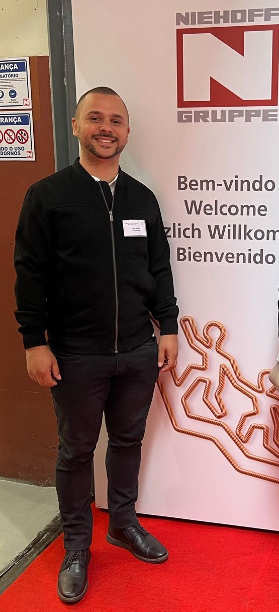

The Future of Automation in Engineering
Published: March 3, 2025
Automation continues to revolutionize industrial processes, from robotics to data-driven monitoring.
Engineers today rely on interconnected systems to boost efficiency and safety. Advances in sensors, AI, and robotics allow complex tasks to be executed with minimal human intervention. Staying updated on these technologies is crucial for professionals seeking to optimize production lines and reduce costs.
Below is a simple Python snippet illustrating how repetitive tasks can be automated:
import time
production_steps = ["check sensors", "start motors", "verify output"]
for step in production_steps:
print(f"Running {step}")
time.sleep(1)
Whether you work with manufacturing systems or software, understanding automation trends will shape the next generation of engineering solutions.